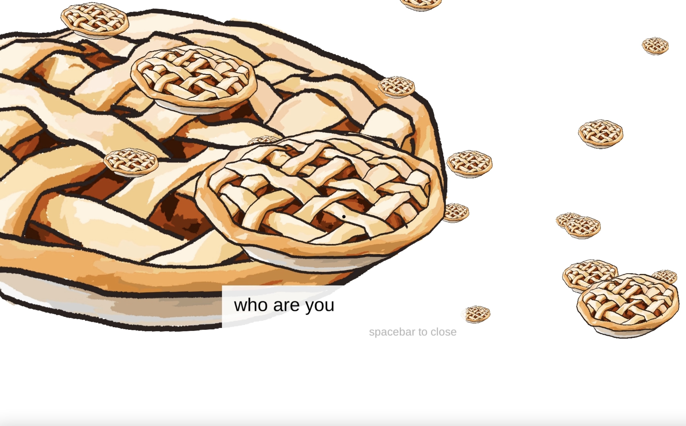
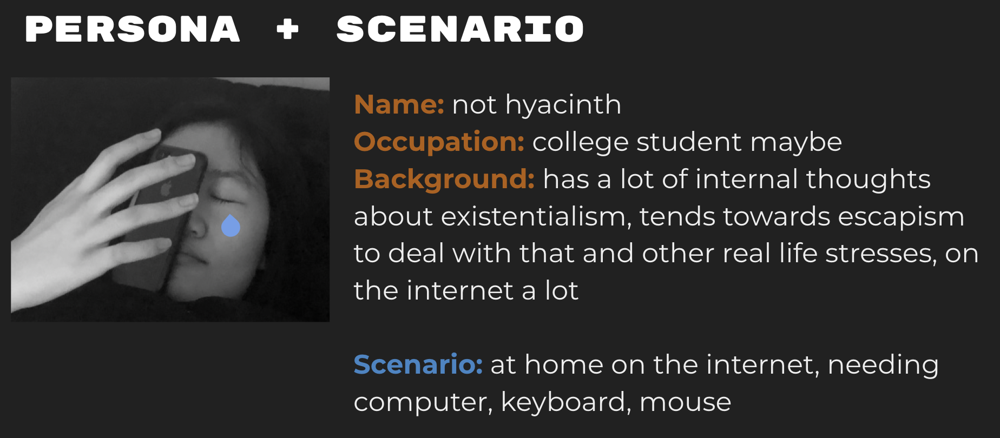
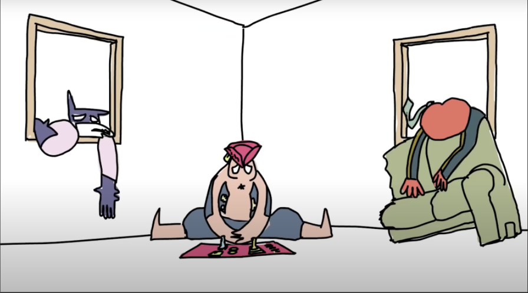
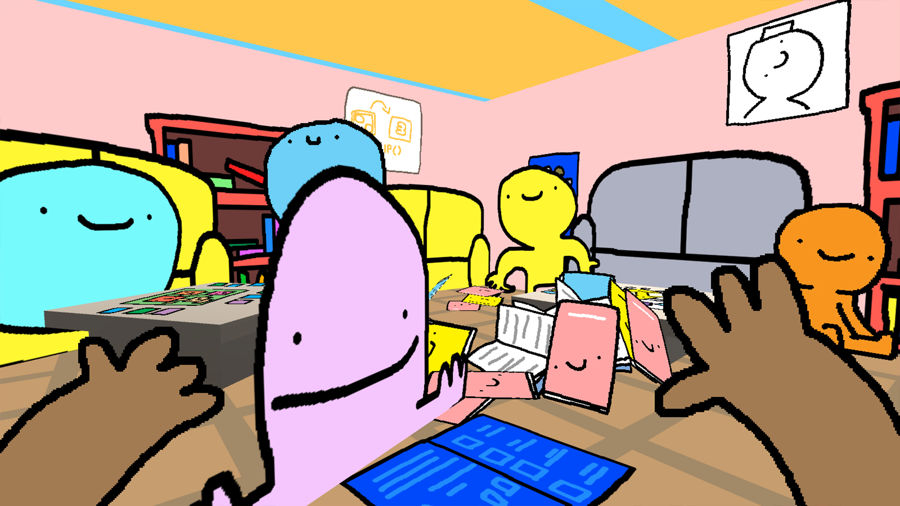
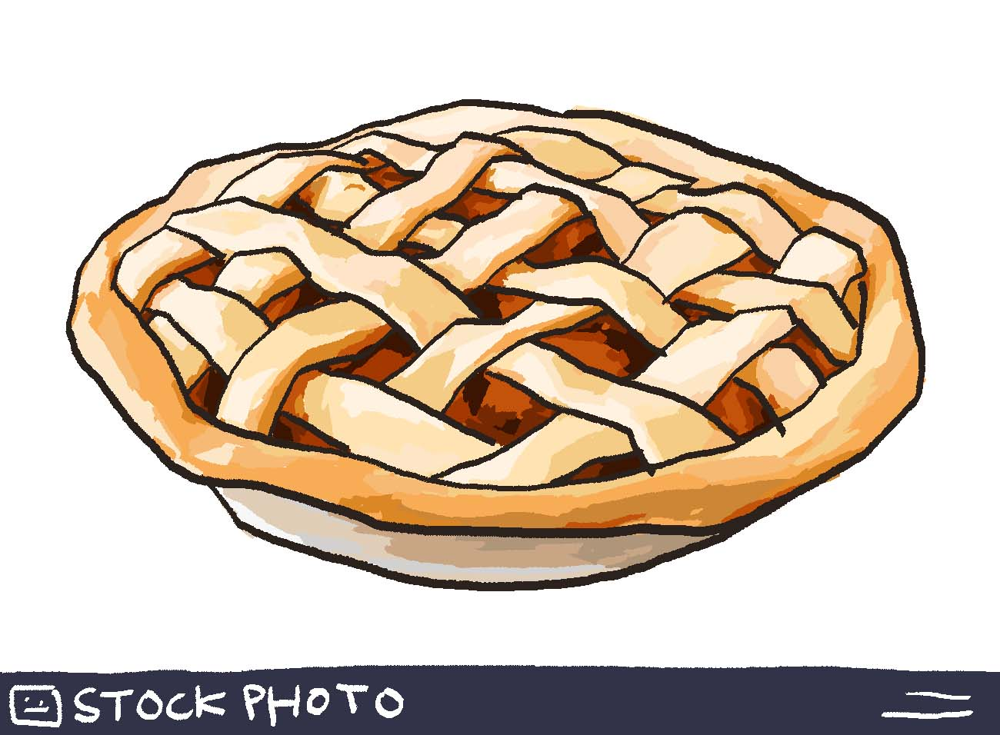

A short cyclic experience on escapism and false environments coupled with identity in a non realistic manner.
Created with Unity 2019, Blender, and Photoshop.
*click the mouse on the very center where the crosshair is to optimize the mouse position for interaction
→ link to play → link to presentation slide deck

About
This project is exploring constructed or false environments in contrast to something that is supposed as “reality” via the juxtaposition of two dimensional and three dimensional elements, as well as a false sense of self sort of resulting from that. You, the user, exist in the third dimension and are a three dimensional thing but your three dimensional ‘reality’ feels so restricted and empty. You find yourself in a world of two dimensional objects that seems much more warm and exciting, but the differences in dimension causes an eventual disjunction between you and your surroundings. You question your identity as you’re probed by the two dimensional world and see yourself seemingly transformed as you return to your three dimensional reality. You don’t know what to think but the only way for you to actually see yourself is through the mirror, so you have no choice but to trust it.
There are two distinct spaces/scenes being juxtaposed. I’ve imagined these spaces in a not realistic way, in that the objects are identifiable and recognizable to us, but they’re being used in a completely different context and manner that is separate from what we know.
Project Mandate & Interactions // Persona + Scenario
The persona I created for this, it somehow turned into an optimized version of myself. This person is perhaps a college student, they have a lot of internal thoughts about existentialism, tends towards escapism to deal with that and other real life stresses, and thus spends a lot of time on the internet. This person is interested in casual games, cute things, illustration, and absurdist humor.
And so this project would be located on the internet, to be accessed on the web browser or available for download if needed, and probably played at home or something. And this is assuming the user has a computer, with a keyboard and mouse, and knows how to use these things.

Precedents & Inspiration // Influences
I have two things I’m taking inspiration from. The first is this animated series called “Baman Piderman”. I’m drawing on the complete emptiness of space and lack of pertinence or validity in the real world logic and context of the space that they’re in. The setting is a completely empty and endless white space. The only structures that exist at a certain point time are those being interacted with. And this is something that I am wanting to represent in my project.
The second are two games called LIBRARY and QT developed by Happy Snake Games. I’m drawing on the visual style of these games, and specifically how everything in this 3d space is a 2d object or entity, exploring perception of dimension. I don’t know if that’s necessarily what the point of the games were but that’s what I’m drawing from it, and this is a major concept that I’m also exploring in my project.

baman piderman

QT
Process & Iterations
I initially envisioned the room as kind of fractured, with a couple walls missing, but there was a pretty different story there that I diverged from. And I swapped out the stock photo with my own illustration for the final.
Visually, in terms of things in the space, my project isn't that complicated. The focus is more on the interactions and how the user is interpreting the things happening. There is a specific narrative I had in mind while constructing this but it may not be the only and single correct way to view it.

Demo + Notes
1. You start off with the basic controls, and you are presented with your reflection in the mirror. You see and identify yourself as this chocolate chip thing. You’re in this sparse white room that's quite confined. There’s really nothing exciting except your own reflection and that pie on the wall. This is your reality.
2. Upon clicking on the image, you are transported to this alternate pie realm. The portal to return is behind you. All the pies in this space are 2d entities. You can attempt to interact and engage in dialogue with them but it’s not very interesting and surface level, to show the disjunction between you and them.
3. The dialogue kind of starts probing you, to lead the player to questioning what they’re doing, and to think about their identity in this space, if they haven't already, to further that sense of falseness.
4. I limited the clipping range of the camera i think it’s called, referencing the animation i mentioned earlier, and to play into the disjunction
5. Upon returning to reality in this white room you're once again presented with your own reflection. But you've changed into a poop. The mirror prompts you to click it, and you are not a poop. What does this mean? What are you? The mirror is the only place you are able to view yourself, so you have no choice but to trust it.
6. This is a cyclic experience, the same basic set of interactions happen over and over again each time you go through, the floating pies remain the same, to show the falseness and constructed nature of that space.
Future Directions
The biggest thing for me is to figure out movement in all three axes. Right now the player is limited to two, and cannot move up or down. I think that’d contribute a lot with the interactions and exploring the space of the pie world.
And my second thing is building off of the first point, expanding on the cube room. I was thinking about allowing the player to leave the room by moving upwards through the ceiling, so that they’d be able to go up and see a bigger scene. And that would contribute to the sense of wholeness of this current reality, something like you’re trapped in this room, but not really. And inversely in the pie world, you see that the space is unlimited but you end up feeling limited.
And then maybe more things happening in the pie space, and just general polishing up of assets and ui things.